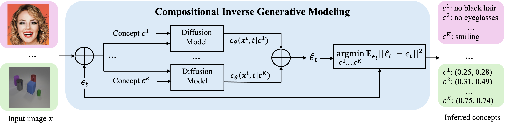
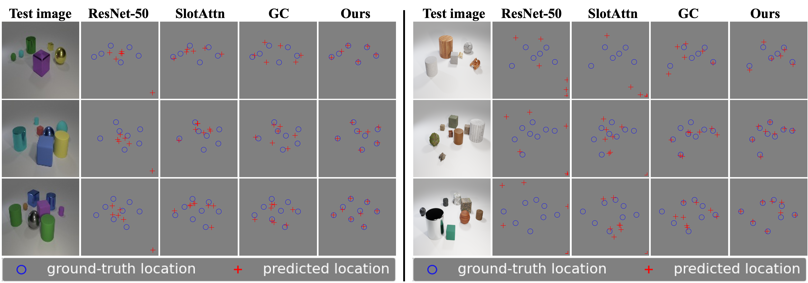

Method
Compositional generative modeling for training. In a visual domain, given a set of conditioned concepts $\boldsymbol{c}^1, ..., \boldsymbol{c}^K$, we construct a generative model that can accurately represent the probability distribution $ p(\boldsymbol{x}| \boldsymbol{c}^1, \boldsymbol{c}^2, ..., \boldsymbol{c}^K)$ over the space of images $\boldsymbol{x}$. To enable effective compositional generalization to a larger number of visual concepts, we further factorize $p(\boldsymbol{x}|\boldsymbol{c}^1, \ldots, \boldsymbol{c}^K) \propto \prod_{k=1}^{K} p(\boldsymbol{x}|\boldsymbol{c}^{k})$ with each $p(\boldsymbol{x}|\boldsymbol{c}^k)$ represented as a diffusion model $\epsilon_\theta(\boldsymbol{x}^t, t|\boldsymbol{c}^k)$, and train a composition of score functions with the denoising diffusion objective $\mathcal{L}_{\theta} = \mathbb{E}_{\boldsymbol{x}, \mathbf{\epsilon}, t}\|\mathbf{\epsilon}- \sum_{k=1}^K \epsilon_\theta(\boldsymbol{x}^t, t|\boldsymbol{c}^k)\|^2$.
Inverse generative modeling for inference. Once the generative model is trained, our approach can find a set of visual concepts that maximize the log-likelihood of the observed image $\boldsymbol{x}$ by solving $\hat{\boldsymbol{c}}^1, \ldots, \hat{\boldsymbol{c}}^K = \text{argmin}_{\boldsymbol{c}^1, \ldots, \boldsymbol{c}^K} \mathbb{E}_{\mathbf{\epsilon}, t}\|\mathbf{\epsilon}- \sum_{k=1}^K \epsilon_\theta(\boldsymbol{x}^t, t|\boldsymbol{c}^k)\|^2$.
Results
Below, we illustrate additional examples to demonstrate how inverse generative modeling coupled with compositionality can not only infer concepts from images but also generalize effectively to scenes more complex than seen during training.
Infer Object Locations
Our approach can infer local factors (such as object coordinates) and object number from a test image, and effectively generalize to scenes containing a larger number of objects and more complex objects than those seen during training.
In-distribution Object Discovery. We train our model with CLEVR images containing 3-5 objects. On the left, given an in-distribution image (also containing 3-5 objects), our approach accurately identifies object coordinates. On the right, we illustrate our approach can determine object number by selecting a number with the lowest denoising error.
Out-of-distribution Object Discovery. Object perception results on out-of-distribution images: CLEVR images with 6-8 objects (Left) or CLEVRTex images with 6-8 objects (Right). Our model is trained with CLEVR images containing 3-5 objects. During inference time, given an out-of-distribution image that is substantially different from training data, our proposed approach can still infer the object positions accurately. In contrast, all baseline models predict object locations that significantly deviate from the ground truth.
Infer Facial Attributes
Our approach can also infer global factors, such as facial attributes, from a test image and reliably generalize to images that differ substantially from training data.
In-Distribution and Out-of-Distribution Facial Feature Prediction.Facial feature prediction results for in-distribution (Left) and out-of-distribution (Right) CelebA images. Our model is trained on female faces from CelebA. During inference, our model can accurately predict facial features consistent with the ground truth for both in-distribution female faces and out-of-distribution male faces.
Infer Object Categories
Finally, we show how our approach can leverage pretrained diffusion models, such as Stable Diffusion, for zero-shot multi-object perception tasks without requiring any additional training.
Zero-Shot Multi-Object Perception on Real-World Images.
Related Projects
Check out a list of our related papers on compositional generation and energy based models. A full list can be found here!